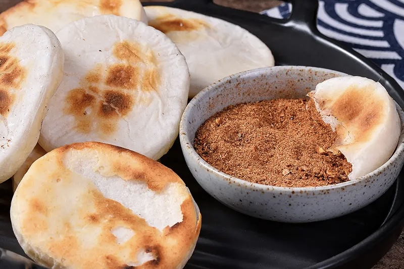

Yunnan
favourite
food and drinks
Fresh, diverse and delicious, Kiwis love their food.
While you’re in New Zealand, seek out a few of
the following quintessential Kiwi foods and drinks.
1.Flower Cake

Flower cake is a snack made of flour, rose, magnolia, chrysanthemum and other
main ingredients. It is a shortcake made of edible rose, which is unique to Yunnan. The
production method is to add milk and eggs into the flour, ferments, fry the pastry, put oil in
the pan, add flour when the oil is warm, fry the flour until it changes color, and reserve the
rose paste. Roll out the dough into a pastry, brush the pastry, roll long strips, divide into
equal sized dosage forms, knead round and roll into a pastry, wrap the rose paste, preheat the
oven 180 degrees for 5 minutes, bake the pie in the oven for 15 minutes. Flower cake is a kind
of Yunnan unique edible rose cake, which is a representative of Yunnan classic dim sum with
Yunnan characteristics. Flower cake in Yunnan local bakery brands are mostly sold. Every April,
waiting for the launch of flower cakes has become the common expectation of local people, and
long lines to buy fresh flower cakes has become a common phenomenon.
2.Rice Noodles

As a unique snack in Yunnan Province, Cross-bridge rice noodles belong to
Yunnan cuisine. They are fresh, fragrant and smooth with sufficient soup ingredients and rich in
carbohydrates, vitamins, minerals and enzymes. They are characterized by rapid and even
ripening, resistance to boiling, smooth and tender taste, no turbidities after boiling and easy
digestion. The Bridge rice noodles are made from soup ingredients, seasoning, raw pork loin
slices, chicken breast slices, mullet slices, half-ripe pork loin slices, belly slices and squid
slices in water. The ingredients include pea tips, leeks, coriander, shredded green onion,
shredded grass sprouts, shredded ginger, sliced yulan, boiled beancurd skin, and finally the
staple food, namely rice noodles slightly scalded in water. It's covered in goose fat, and the
gravy is piping hot, but not steaming. According to legend, there was a scholar studying in
ancient times. His wife poured hot oil into the soup to keep the rice noodles warm in order to
prevent her husband from eating too cold rice noodles. The soup noodles were still very hot when
her husband used them, so he needed a small bowl of cold food. The rice noodles in the casserole
are replaced in the bowl with chopsticks. The rice noodles make the two bowls as a bridge. It
means that the wife sends the rice noodles across the bridge, so it is called the bridge rice
noodles.
3.Rice-flour Cake

As one of the most famous characteristic snacks in Tengchong, Yunnan Province, and
one of the common traditional foods in Yunnan, Guizhou and some parts of Sichuan Province, Er Kuai
are unique to Yunnan and Guizhou. Er Kuai is made of high-quality rice, which is washed, soaked,
steamed, rammed and kneaded into various shapes. Er Kuai is generally divided into block, silk,
slice three kinds. Its production methods include but not only burning, boiling, stir-frying,
brining, steaming, frying, can be said to be different flavors, long time to eat.
4.Steam Pot Chicken

Steamboat chicken is a famous dish in Yunnan Province, belonging to the Yunnan
cuisine family, which has been circulating in the folklore of southern Yunnan since more than 200
years ago, named because the dish is steamed in a steamer. The main ingredient is chicken, and the
main cooking process is steaming, which has the effect of nourishing the body, nourishing blood,
strengthening the spleen and appetite, and the steam pot chicken is loved by the public because of
its nutritiousness.
5.Shiping tofu

"The water spotted with agar jelly is strange in the world, and the fire-fired
tofu is fragrant outside the clouds." With a long history of more than 600 years, Shiping Tofu, an
intangible cultural heritage of Yunnan Province, is unique in that it is made with local "sour
water". This water naturally contains brine instead of gypsum, and the tofu made is fragrant and
tender, which is known for its high quality and delicious taste.
6.Hands Pilaf

Dai hand-held rice is a specialty of the Dai people in Xishuangbanna, Yunnan. It
is served with a layer of cleaned bajiao leaves on the table and then served with the dishes, which
are placed symmetrically, with the rice placed in the middle of the table; there is rice and purple
rice, garnished with eggs on the top, and spicy chicken placed in the middle. The table is
embellished with a model of a peacock's head on the side, and other dishes include rice noodles,
fried tofu, and so on. To eat Dai hand-held rice is eaten without chopsticks and bowls, just grabbed
with your hands. According to tradition, a cluster is first picked up from a small dish containing
condiments, and then kneaded between the fingers, pinched into a tight, soft mass, and then eaten.
Nowadays, people are more casual in the way they eat, each wearing a pair of disposable gloves to
grab and eat whatever they want.
7.Papaya Water

Papaya water is a drink in Sichuan, Chongqing, Yunnan and Guizhou. The shape of
papaya water is a bit like jelly, ice powder, but it is softer and smoother than jelly. Soft and
slippery in the mouth, seemingly between, but mixed with brown sugar water real sweet, sesame
fragrance, rose sugar drunk, and then with the red and green silk color, very peculiar.
Find us on
Twitter
Instagram
Facebook
Youtube
Contact us
Request a map
Site feedback
Need help?
Help
Terms of use
Privacy Policy
Cookies
Manage privacy settings
Our other sites
Media
The Visual Library
Travel Trade
Business Events